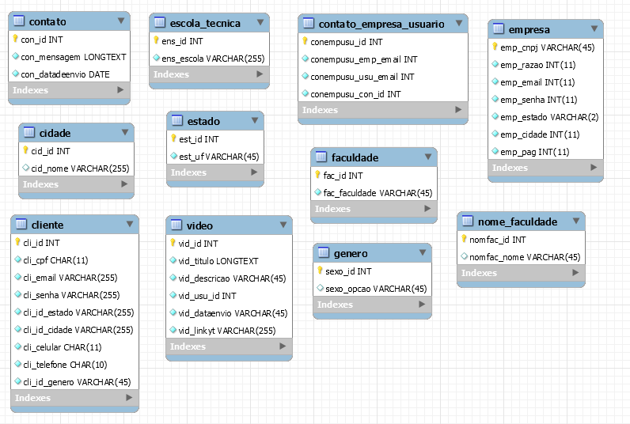

Banco de dados
O banco de dados que será utilizado no nosso sistema web seguirá esta:

Foi modelado utitilizando o programa Workbench e foi portado para SQL usando o programa de criação de servfidores locais Xampp, onde será conectado ao sistema web.
Sobre o a linguagem SQL, Será uma linguagem utilizada para a criação e modelagem de banco de dados, para que armazene novas informações e que as mantenham para uma futura pesquisa.
O MySQL também será muito útil na programação de banco de dados, para que haja uma facilidade de troca de informações.